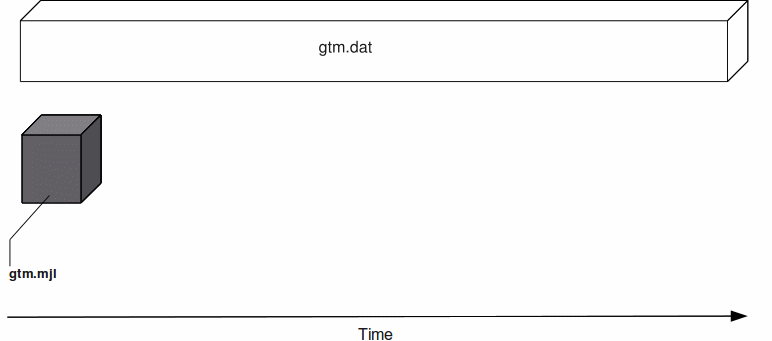
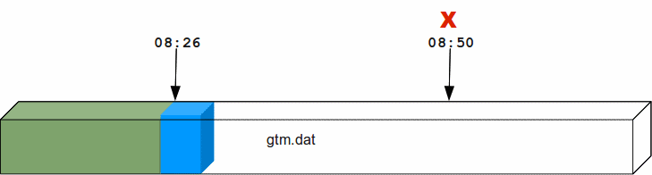

The four key properties of transaction processing systems, the so-called "ACID" properties are: Atomicity, Consistency, Isolation, and Durability. GT.M transaction processing provides the first three by means of the TStart and TCommit commands and Durability through journaling.
GT.M, like virtually all high performance databases, uses journaling (called "logging" by some databases) to restore data integrity and provide continuity of business after an unplanned event such as a system crash.
Note that, journaling is not a substitute for good system configuration and design. For example, if a database and its journal files are on the same disk controller, a hardware failure on that controller can damage both files, and prevent recoverability. Journaling complements other techniques to build a robust system.
Journaling requires no M programming. However, the GT.M commands described later in this chapter may enhance the value of journaling.
GT.M journaling uses journal files to record information pertaining to database updates. A journal file has a default extension of mjl. If the new journal filename (the one specified in the FILENAME option or the default) already exists, GT.M renames the existing journal file by appending a string that denotes the time of creation of the journal file in the form of "_YYYYJJJHHMMSS" where:
YYYY 4-digit-year such as 2010 JJJ 3-digit-Julian-day (between 1 and 366) such as 199 HH 2-digit-hour in 24 hr format such as 14 MM 2-digit minute such as 40 SS 2-digit seconds such as 30
The following animation describes how GT.M uses journal files to record information pertaining to database updates on gtm.dat (the default database file created by gtmprofile).
At any given time the database file (gtm.dat) has a single active journal file (gtm.mjl) with links to predecessor ("previous generation") journal files. The black arrow between the journal files demonstrate how a journal file is back-linked to its predecessor with file name in the form of gtm.mjl_YYYYJJJHHMMSS to form a chain of journal files. When a switch of journal files occurs, either implicitly (for example, when AUTOSWITCHLIMIT is reached) or explicitly (for example, on a backup event or MUPIP SET -JOURNAL=ON), GT.M renames the existing journal file with the timestamp of its last modification.GT.M creates a new journal file with the name of the journal file for that database, and specifies the previous generation journal file name (after the rename), in the newly created journal file's header.GT.M journaling provides mechanisms for durable recovery/extract from the journal files, replaying database updates to an active database, reverting the database state to a previous consistent state for when replication is in use, and so on. GT.M automatically turns off journaling on encountering run-time conditions such as no available disk space or no authorization for a process attempting to auto-switch a journal file. In such a case, GT.M also logs an appropriate message to the operator log to alert the operational staff. If GT.M detects that the rename-logic yields a filename that already exists (a condition when journal files are switched in the same second), the string "_N[N[N[N...]]]" is appended to the renamed filename where "N[N[N...]]" denotes a sequence of numbers as follows:
0,1,2,3,4,5,6,7,8,9,90,91,92,93,94,95,96,97,98,99,990,991,...
GT.M tries all numbers from the order in the above sequence until it finds a non-existing rename-filename. In the above illustration, if gtm.mjl_2010227 082618 is switched in the same second and gtm.mjl_2010227 082618_0 already exists, the renamed journal file would be gtm.mjl_2010227 082618_1. If the existing file renaming scheme or the default journal file naming scheme discussed above results in a filename longer than 255 characters (due to the suffix creation rules), GT.M produces an error and turns off journaling.
![[Note]](images/note.jpg) |
Note |
|---|---|
In a very short time window just before switching a journal file, GT.M create a temporary file with an .mjl_new extension and attempts to write a few initialization journal records. After performing an initial verification, GT.M renames the .mjl_new file to the current .mjl file. In rare cases, you might see an .mjl_new file if the journal file creation process was interrupted midway (possibly due to permission or disk space issues). If a subsequent MUPIP process detects an .mjl_new file and no .mjl file, it automatically deleted it and creates a new .mjl file. |
There are two switches to turn on journaling - ENable / DISable and ON/OFF. Enabling or disabling journaling requires stand alone access to the database. Turning journaling on and off can be done when the database is in use. Note: Whenever GT.M implicitly turns off journaling due to run-time conditions such as no available disk space or no authorization for a process attempting to auto-switch a journal file (and so on) , it produces an error with accompanying messages to alert operation staff.GT.M on selected platforms can encrypt data in database and journal files. Encryption protects against unauthorized access to data by an unauthorized process which is able to access disk files, that is, encryption protects data at rest (DAR). Rather than build encryption into GT.M, a plug-in architecture facilitates use of your preferred encryption software. For more information, refer to Chapter 12: “Database Encryption”.
The following two procedures enable recovery of a database from a journal file:
Forward Recovery (roll forward by applying )
Backward Recovery (roll back to a checkpoint, optionally followed by a subsequent roll forward)
|
Note |
|---|---|
In a multi-site database replication configuration, you might use these recovery procedures to refresh a replicating instance from the backup of an originating instance. However, the steps for both these recovery procedures are different. |
Forward recovery "replays" all database updates in forward direction till the specified point in the journal file. Forward recovery on a backup database starts from when the backup was taken and continues till the specified point in the journal files. Forward recovery on an empty database starts from the beginning of the journal files.
Suppose a system crash occurred at 08:50 hrs and a backup of the database was taken at 08:26 hrs. Using forward recovery, you can replay the database updates between 08:26 hrs to 8:50 hrs (in blue) on the backup copy of the database and restore the database to a state prior to the crash. In the process you can also identify unfinished or broken transactions that might have occurred at the time of the crash. In the following illustration, X denotes the crash time and the blue updates denote forward processing.

A command like mupip journal -recover -forward -before="--8:50" gtm.mjl performs this operation. From the current journal file, forward recovery moves back to the point where the begin transaction number of a journal file matches the current transaction number of the active database (the point when the backup was taken) and begins forward processing. Since a journal file is back-linked to its predecessor, GT.M facilitates forward processing by activating temporary forward links between journal files that appear only during recovery. These forward links are temporary because they are expensive to maintain as new journal files are created. Note: Forward recovery, by design, begins from a journal file whose "Begin Transaction" matches the "Current Transaction" of the active database. This condition occurs only when a new journal file is created (switched) immediately after a backup. If a database is backed up with MUPIP BACKUP -NONEWJNLFILES (a backup option where journal files are not switched), forward recovery cannot find a journal file whose Begin Transaction matches the Current Transaction and therefore cannot proceed with forward recovery. Always use a backup option that switches a journal file or switch journal files explicitly after a backup. Also, once a database has been recovered using forward recovery, you can no longer use it for a future recovery unless you restore the database again from the backup.
Backward recovery restores a journaled database to a prior state. Backward processing starts by rolling back updates to a checkpoint (specified by -SINCE) prior to the desired state and replaying database updates forward till the desired state.
Backward Recovery uses "BEFORE_IMAGE" journaling. With BEFORE_IMAGE journaling, GT.M captures the database updates, as well as "snapshots" of portions of the database immediately prior to the change caused by the update. Unlike forward recovery which works on a backup database, backward recovery works only on production (current) database provided it is usable and BEFORE_IMAGE journaling is enabled.
Suppose a system crash occurred at 10:35 hrs, a command like mupip journal recover backward -lookback_limit="TIME=0 10:10" -since="-- 10:20" -before="-- 10:30" performs backward recovery. The following illustration demonstrates how GT.M performs a recovery after a system crash at 10:35. Backward recovery "un-does" the database updates backward to 10:20, then applies updates forward until the crash. By adding -BEFORE="- - 10:30" to the command, the recovery stops when forward processing encounters updates that originally occurred after 10:30. If the application includes ZTSTART and ZTCOMMIT commands to fence a group of transactions, backward processing may continue back prior to 10:10 searching to resolve fenced transactions that were incomplete at 10:20.

-LOOKBACK_LIMIT controls the maximum amount of additional backward processing, in this case, 10 minutes. Note that the -SINCE time in this example is slightly exaggerated for the sake of the graphical representation. If the application includes TSTART and TCOMMIT commands to fence transactions, backward processing does not require LOOKBACK_LIMIT because TSTART/TCOMMIT transactions automatically resolve open transaction fences. So, in the above example if the transactions are fenced with TSTART/TCOMMIT, backward recovery automatically increases the backward processing by 10 minutes.
![[Important]](images/important.jpg) |
Important |
|---|---|
ZTSTART and ZTCOMMIT are deprecated in favor of TSTART and COMMIT. FIS no longer validates ZTSTART/ZTCOMMIT and -LOOPBACK_LIMIT (since it applies to ZTSTART/ZTCOMMIT). |
GT.M adds a prefix rolled_bak_ to the journal file whose entire contents are eliminated (rolled back) by a backward recovery. GT.M does not use these files after a successful recovery therefore you might want to consider moving or deleting them. You should never use rolled_bak* files for any future database recovery. If there is a need to process rolled_bak* files, you should extract the journal records and process them using an M program. FIS recommends that you rename the roll back journal file immediately after a rollback if you want to save it, to prevent a subsequent rollback from overwriting it.
GT.M propagates access restrictions to the journal files, backup, and snapshot temporary files. Therefore, generally journal files should have the same access authorization characteristics as their corresponding database files. In the rare case where database access is restricted but the owner is not a member of either the database group nor the group associated with the $gtm_dist directory, you should provide world read-write access to the journal files. As long as the operating system permits the access, GT.M allows access to database files and journals in cases where the system has no user or group information available for the file. Such an unusual situation can arise, for example, when the user and group are provided via NIS, but if NIS is not currently operational the owner and group cannot be determined; or perhaps a user id is deleted while the GT.M process is active.
GT.M manages "trigger definitions" and "triggered updates" differently during journaling and replication. Trigger definitions appear in both journal files and replication streams so the definitions propagate to recovered and replicated databases. Triggered updates appear in the journal file, since MUPIP JOURNAL -RECOVER/-ROLLBACK does not invoke triggers. However, they do not appear in the replication stream since the Update Process on a replicating instance apply triggers and process their logic.
GT.M implicitly wraps a trigger as an M transaction. Therefore, a journal extract file for a database that uses triggers always has Type 8 and 9 (TSTART/TCOMMIT) records even if the triggers perform no updates (that is, are effectively No-ops).
When journaling is ON, GT.M generates journal records for database updates performed by trigger logic. For an explicit database update, a journal record specifies whether any triggers were invoked as part of that update. GT.M triggers have no effect on the generation and use of before image journal records, and the backward phase of rollback / recovery.A trigger associated with a global in a region that is journaled can perform updates in a region that is not journaled. However, if triggers in multiple regions update the same node in an unjournaled region concurrently, the replay order for recovery or rollback might differ from that of the original update and therefore produce a different result; therefore this practice requires careful analysis and implementation. Except when using triggers for debugging, FIS recommends journaling any region that uses triggers.If you database uses triggers, always ensure that unjournaled globals do not perform triggered updates in journaled globals and create procedures to handle trigger updates in the broken/lost transaction files. In broken/lost transaction files, you can identify these entries as + or - and appropriately deal with them using MUPIP TRIGGER and $ZTRIGGER().
BEFORE_IMAGE is a form of Journaling that creates "mini-backups" preceding each database update. Backward Recovery uses these mini-backups to restore the database as far back in time then it replays the database updates."BEFORE_IMAGE" journaling requires more disk I/O and storage space than M-level (or NOBEFORE) journaling but delivers faster recovery times from system failures .
|
Note |
|---|---|
As stated in the GDE chapter, the MM database access method bypasses the BG buffer pool and relies entirely on the operating/file system to manage traffic between memory and disk. Because with MM, GT.M has no control over the timing of disk updates, BEFORE_IMAGE journaling is not an option with MM; attempts to use these two facilities together produce an error. |
"NOBEFORE_IMAGE" is a form of M-level Journaling that sequentially stores each database update in a journal file. A forward recovery operation restore the database by replaying these database updates."NOBEFORE_IMAGE" consumes less I/O bandwidth in normal use and helps obtain more throughput from the available servers.
The choice between BEFORE_IMAGE journaling and NOBEFORE_IMAGE journaling is important especially in a logical multi-site database replication deployment. If an application pushes the I/O bandwidth of the servers on which it runs, NOBEFORE_IMAGE journaling may help obtain more throughput from available servers. BEFORE_IMAGE journaling could be the likely choice if an application requires quicker recovery in the unlikely event of a crash. For a comprehensive discussion on the choosing the type of Journaling, refer to “Choosing between BEFORE_IMAGE and NOBEFORE_IMAGE journaling”.
GT.M reports unfinished journal records and incomplete fenced transactions as broken transactions. Unfinished journal records appear when certain catastrophic events prevent GT.M from completely writing all journal records to the journal file. Incomplete fenced transactions appear when a missing journal file or the selection qualifiers used with MUPIP JOURNAL reduce the coverage of journal records in a way that only a portion of a fenced transaction becomes available for processing. For example, when database updates between the TSTART and TCOMMIT commands span to multiple regions and MUPIP JOURNAL -EXTRACT -FORWARD <jnlfile> attempt to process journal records from only one region of that transaction. MUPIP JOURNAL omits broken transaction records from processing and stores them into a file called the broken transaction file.
Any complete transaction (fenced or not) that occurs after a broken transaction is a lost transaction. MUPIP JOURNAL omits lost transaction records from processing and stores them into a file called the lost transaction file. The label of the journal file provides information about the MUPIP JOURNAL processing (ROLLBACK, RECOVER, or EXTRACT) that generates the lost transaction file.
For -EXTRACT and -RECOVER, MUPIP JOURNAL processing generates a lost transaction file for all complete transactions (fenced or not) after a broken transaction. For -ROLLBACK, MUPIP JOURNAL generates a lost transaction file with records that may include unreplicated updates, in-flight updates, or updates that were rolled back due to an operator intervention or a replication setup reconfiguration. If you are in a multisite replication configuration, a lost transaction is a transaction that must be rolled off a database to maintain consistency across all instances.
As MUPIP JOURNAL omits processing the records in a lost transaction file, you need to reconcile (as needed) them to your application. If you are using replication, you should apply a lost transaction file to the originating instance as soon as possible. Use the $ZQGBLMOD() function to help determine whether it is safe to apply a record from a lost transaction file to a global name. If you are not using replication, FIS recommends creating application tools/operation scripts that help with reprocessing the information in the lost transaction file as part of post-recovery check procedures.
An epoch is a checkpoint at which GT.M creates a state where a database file and its journal file are in complete sync and to which GT.M can make a consistent recovery or rollback. GT.M processes constantly cooperate with each other to write the data from the buffers to the secondary storage. At epoch time, GT.M holds a critical section to complete all pending write operations. Other processes updating the database wait till GT.M completes the epoch. GT.M epoch events have a slightly higher(possibly spiky) impact. With -EPOCHTAPER, GT.M tries to minimize the epoch duration by reducing the amount of data to flush as an epoch event approaches.
It is important to understand the benefits of Journaling before you enable Journaling on your database. M database management ensures that multiple concurrent updates and retrievals of the same information (or information "close together" in ordered sequence) occur in a predictable and logical fashion. Sometimes a database manager may have to change multiple records, usually indices, as a result of a single update. Interrupting a process that is performing such a "multi-point" update violates a design assumption of the M implementation and also results in a malformed database. Under normal operation, the database logic handles interruptions by deferring their recognition until the update is complete. However, occurrences such as power failures or a KILL-9 can cause such interruptions. GT.M Journaling helps maintain data integrity and continuity of business in the event of such interruptions.
Other benefits include (but not limited to):
Automatic replay of work to the last committed update recorded in a journal file. Note that with the use of transaction processing and journaling, GT.M provides full ACID properties.
Quick recovery options, such as processing only the information recorded immediately prior to failure. For example, you can recover just the last minute of work instead of replaying the entire journal file.
Recorded database updates formatted appropriately for processing by an M program. For example, MUPIP JOURNAL -EXTRACT produces records specified by time, user, the process identification number, global variable, process name, and transaction type.
Identification of processes active when the system failed. -SHOW identifies these processes, as well as what transactions were not completed, and other information about the database updates and processes contained in the journal file.
FIS recommends separate backup schemes for database files and journal files. MUPIP BACKUP creates a backup copy of the database. You should backup journal files separately.
MUPIP BACKUP uses the -BKUPDBJNL and -NEWJNLFILES to interact with journal files. As stated in the General Database Management chapter, BKUPDBJNL enables or turns off the journaling characteristics of the backup database and NEWJNLFILES sets the journaling characteristics of the database being backed up. The following illustration describes how MUPIP BACKUP -NEWJNLFILES=NOPREVLINK cuts the back link between the newly created journal file and the prior generation journal files.

Because -NEWJNLFILES=NOPREVLINK cuts back link of the newly created journal file, any subsequent recovery, rollback or request to the source server go back past this discontinuity.
|
Note |
|---|---|
When MUPIP SET changes the journal state from DISABLED or OFF to ON, GT.M creates new journal files with no back-links which, like the above example, indicates a fresh start of journaling for the database. |
You should journal any databases whose integrity you care about. Conversely, you need not journal any database that you are prepared to delete in the event of an untoward event like a system crash.
FIS recommends considering the following aspects before you select database files for Journaling.
-
Always journal data that is worth preserving: You can journal some or all database files. A quickly understood method of selecting database files for Journaling is as follows:
Do not journal any database that you are prepared to delete in the event of an untoward event like a system crash. Never journal temporary data.
Truly static does not require journaling but produces no journal impact when held in journaled regions.
Move temporary information to separate database files that do not require journaling. If the globals contains process-local(temporary) information or possibly static information, move them to one or more separate database files and use other means (for example, MUPIP CREATE or MUPIP BACKUP) to manage the information in their region(s).
Weigh the deltas associated with manual re-entry and automatic re-play of transactions: Most of the overhead costs associated with recovering from a failure usually derive from maintaining a state of preparedness for the manual recovery and the potential risk to the organization from damage to the information during the relatively infrequent and "abnormal" handling of a recovery. Therefore, always weigh the cost of reduced computer throughput or alternatively the additional hardware to support journaling with the same level of performance, against the reduced likelihood of a prolonged manual re-entry with its associated drawbacks.
Journal both frequently updated globals and infrequently updated globals: You might journal only heavily updated globals. However, infrequently changed globals generate little additional load and may present significant control problems if not journaled, you might decide that these globals should also be journaled to maintain application integrity.
Separate the point of failure: Always use different disks and different disk controllers (where possible) for the journal and the associated database files.
The programming practice of fencing logical transactions protects database integrity during a system interruption. A logical transaction is a logical unit that is not complete unless all parts of the transaction are captured. For instance, the logical transaction "transfer funds between accounts" consists of a debit update to one account and a credit update to another account.
Establishing fences around a logical transaction assures that the transaction is committed as a unit, thereby avoiding logical inconsistencies. These logical inconsistencies, sometimes referred to as application-level database integrity problems, manifest themselves as run-time errors, inappropriate branching, and incorrect reports.
The four ACID properties are Atomicity, Consistency, Isolation and Durability. GT.M provides Durability with Journaling and Atomicity, Consistency, and Isolation with TSTART and TCOMMIT commands. The TSTART and TCOMMIT commands are replacements for the ZTSTART and ZTCOMMIT commands. The following table shows the benefits and drawbacks of each set of TSTART/TCOMMIT versus ZTSTART/ZTCOMMIT commands with their application transaction-fencing requirement.
|
TSTART/TCOMMIT |
ZTSTART/ZTCOMMIT |
|---|---|
|
Provide a transaction management facility that is fully ACID-compliant. |
Provide journal enhancement to improve the quality of recoveries. With ZTSTART/ZTCOMMIT, programming logic, usually LOCK protocols, must ensure Consistency and Isolation. |
|
All updates stay private until the time of TCOMMIT. This ensures Atomicity. |
Atomicity is only ensured (within operationally set parameters) during journal recovery |
|
No cascading rollbacks |
A long-running transaction can trigger cascading rollbacks. |
|
TSTART can manage local variable state on restarts. |
|
|
Depth of "nested" transactions for TSTART and TCOMMIT is 127. |
Depth of "nested" transactions for ZTSTART and ZTCOMMIT is 25. |
|
Important |
|---|---|
The term cascading roll-back describes the situation that occurs when dropping one transaction causes previous transactions to be sequentially dropped, until potentially all transactions are dropped. If an application violates this assumption, a JOURNAL -RECOVER may create a database with application-level integrity problems. M LOCKs ensure the isolation of a sequence of updates from interaction with any other updates. TSTART and TCOMMIT transaction fences implicitly exhibit the required isolation whether fences are used with or without associated LOCKs. |
For more information on TSTART/TCOMMIT, refer to the "Commands" chapter of the GT.M Programmer's Guide for more information.
|
Note |
|---|---|
As stated in the beginning of this chapter, ZTSTART and TZTCOMMIT are deprecated in favor of TSTART and TCOMMIT. FIS no longer validate the ZTSTART and ZTCOMMIT functionality so you should always use TSTART and TCOMMIT to fence your transactions. |
You might fence some, all, or no application programs. When you program with fences, it is possible to force a recovery to ignore the fences by using additional qualifiers to MUPIP JOURNAL -RECOVER. The following lists advantages and disadvantages for fencing transactions.
Faster recovery
Minimum risk recovery
Databases recovered from journals that include fences do not require post-recovery checks and repairs for logical consistency
Note that TSTART/TCOMMIT pairs are the preferred method of fencing; see the sections on Transaction Processing in the GT.M Programmer's Guide for addition benefits of this approach.
Must be programmed into the M code
If the application is already structured to minimize logical transaction breakage problems, inserting the fencing commands may be a largely mechanical task. In less structured applications, inserting fences immediately "inside" the M LOCKs associated with transactions may provide an excellent first approximation of proper fencing.
Fencing adds some entries to the journal file(s)
Fencing may duplicate methods of recovery already established to address these issues
An application structured so that all information for each logical transaction is stored in a single global node (while other nodes hold only redundant information), permits rebuild programs to completely correct logical inconsistencies. With less restrictive designs, logical inconsistencies may be corrected manually or by using semi-automated techniques.
GT.M provides the JNLFLUSH and JNLWAIT keywords as arguments to the VIEW command. Normal operation does not require VIEW commands to control journaling. However, under special circumstances, such as debugging, VIEW commands with journal keywords allow an M program to ensure that GT.M has transferred all its updates to the journal file(s).
VIEW "JNLFLUSH":region initiates a complete transfer of all buffered journal records for a given region from memory to the disk. Normally, the transfer of journal buffers to disk happens automatically. The transfer is triggered by room requirements to hold new journal records and/or the passage of time since the last update. VIEW "JNLFLUSH" (without a specified region) flushes all regions in the current Global Directory.
VIEW "JNLWAIT" causes GT.M to suspend process execution until all updates initiated by the process in all regions have been transferred to the journal file (on disk). Updates within M TRANSACTIONS typically behave as if they included an implicit VIEW "JNLWAIT" with their final TCOMMIT. TRANSACTIONS with a TRANSACTION ID="BATCH" or "BA" are exempted from the implicit "JNLWAIT". Normally, process execution for updates outside of M transactions continues asynchronously with the transfer of journal records to disk.
For more information on the VIEW command, refer to the "Commands" chapter in the GT.M Programmer's Guide.
GT.M provides the JNLACTIVE, JNLFILE, REGION and JNLTRANSACTION keywords as arguments to the $VIEW function. Normal operation does not require $VIEW() to examine journaling status. However, under certain circumstances, such as during debugging of logical transaction design and implementation, $VIEW() may provide a useful tool.
$VIEW("JNLACTIVE", region) returns a zero (0) indicating journaling is disabled for the region, one (1) indicating journaling is enabled but OFF, or two (2) indicating journaling is enabled and ON for the named region.
$VIEW("JNLFILE", region) returns the journal file name. If no journal filename has been established it returns a null string. Otherwise it is a fully translated filename.
$VIEW("REGION", expr) where expr evaluates to a gvn, returns the name of the region associated with the named gvn. This parameter may be used in conjuction with the above two parameters (JNLACTIVE & JNLFILE), to get journaling status in a configuration-independent manner.
$VIEW("JNLTRANSACTION") returns the difference between the number of ZTSTARTs that have been issued and the number of ZTCOMMITs. If no fenced transaction is in progress, then a zero (0) is returned. This serves an analogous function to $TLEVEL for transactions that use TSTART and TCOMMIT.
For more information on $VIEW(), refer to the "Functions" chapter in the GT.M Programmer's Guide.